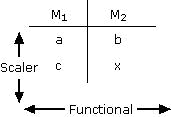
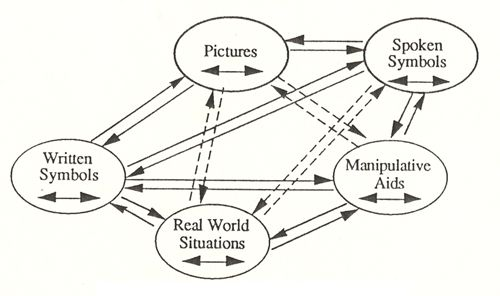

|
||||||||||||||||||||||||||||||||||||||||||||||||||||||||||||||||||||||||||||||||||||||||||||
|
||||||||||||||||||||||||||||||||||||||||||||||||||||||||||||||||||||||||||||||||||||||||||||
The charge to the authors represented in this book was to relate each chapter as far as possible to the multiple research perspectives or strands: content analysis, student thinking, teacher thinking, classroom instruction, assessment, and curricular implications. In one sense, this chapter on curricular implications may be the easiest chapter to write, because by its very nature the discipline of mathematics education is an applied science. Each researcher/participant ultimately has the same overall goal or objective-that of improving the quality of mathematics instruction and learning on behalf of children. From this perspective, it should be possible to identify relevant implications from most of the literature published in the area. On the other hand, this may be the most difficult of the chapters to develop because the vast majority of published pieces do not concern themselves overtly with curricular implications, and the sheer enormity of published material precludes any definitive compilation of implications for the classroom. This chapter instead selects a potpourri of results from a variety of important contributions, taking cognizance at the onset of the fact that our selections of necessity are biased and that we no doubt overlook significant work in each of the domains considered. A disproportionate number of the references allude to our own work in the Rational Number Project (RNP) -a program that has been funded by the National Science Foundation since 1979 to examine children's learning of and, more recently, teachers' conceptions of rational number and proportionality concepts. Classroom instruction lags behind research in both content and methodology. The past decade has seen a large number of publications and reports all decrying the state of the art of mathematics instruction and the unacceptable levels of student achievement. More recently, researchers have documented the unacceptable levels of some teachers' mathematical and pedagogical knowledge. Serious questions now can be raised about the causal relationship between teachers' understandings of content (or lack thereof) and the resulting levels of student achievement. Studies attempting to establish finely grained causal relationships between these events have not been conducted, but what were ancillary questions have been elevated to the level of conscious consideration. Excellent teachers, as judged by the achievement and understandings of their students, do comprehend the mathematics they are teaching to children. Advances within each of the areas considered in this book, and in this chapter, have been of substantial magnitude and importance. Each area of concern here could lay claim to having rather substantial implications for overhauling the school mathematics curriculum, from its content to its pedagogy, to the way students are managed, to the way in which outcomes are measured and evaluated. It is our position that each of these areas must undergo radical revision if we are to devise a mathematics curriculum that is valid for the 1990s and beyond. An examination of textbook content reveals a curriculum whose implied purpose is to prepare students for the early 20th century by stressing speed and accuracy in computational endeavors with paper and pencil. Furthermore, relatively large content domains are found to be absent from serious consideration. Ratio, measure, and operator, for example, are subconstructs of rational number (Kieren, 1976) and are not given nearly enough emphasis in the school curriculum. Perhaps the most serious problem, however, is the superficial nature of content coverage, which tends to focus on the procedural rather than the conceptual aspects of the mathematics under consideration. One only has to examine a mathematics textbook superficially to establish quickly the truth of this statement. Page after page of drill and practice exercises are still the norm rather than the exception; problem solving seemingly has more to do with the existence of words than it has to do with the presence of a problematic situation for which the person involved has no ready made response patterns -the more or less standard definition of problem solving. The presence of real-world problem situations that will require extended and repeated periods of contemplation are virtually nonexistent. In short, our students are spending most of their time deriving pat answers to familiar questions, a skill of dubious value because at the point when the questions become unfamiliar, the answers no longer will be predictable. The time-honored grade placement of material also must receive new and serious reconsideration. It is no accident that the placement of a large portion of the topics in elementary school mathematics continues to mirror the grade placement suggested by earlier studies and committee reports. These reports are no longer relevant or appropriate. For example, the Committee of Seven report (1939) suggested the mental age, in years and months, when mathematical content should be introduced to children. Multiplication was considered appropriate for children who have a mental age of approximately 11 years. According to the report, "Multiplication facts with products over 20 are not adequately learned at a mental age of 10 years, 9 months: only 56% of the children of this mental age make scores of 7607o or more, even when they have an adequate foundation of addition facts. The Committee's data do not go above mental age 10-9 for multiplication facts, but the simple multiplication foundations test for long division would indicate that by a mental level of about 11, more satisfactory learning of all the multiplication facts is entirely possible" (p. 312). Further, according to the Committee, "But a problem by problem analysis of the test data clearly puts the more difficult two-place quotient problems at a mental level of 12 years, 9 months" (p. 313). Numerous other examples exist. To be fair, the Committee of Seven's earlier report (Washburne, 1930, 1939) was criticized by Raths (1932) and by Brownell (1938), but it is also important to note that several generations of school curricula were influenced heavily by the placement recommendations of the Committee of Seven. This continues to some extent to the present day; for example, notice that every U.S. text series introduces multiplication to students in the third grade, a placement that roughly corresponds to 9 or 10 years of age. It is at this time that students are encouraged to memorize the multiplication facts. Other examples abound. Surely we know enough today to reconceptualize appropriate grade placement of topics on grounds other than mental age! Such a reconceptualization surely will result in a very different scope and sequence. Much of the research on mathematics learning over the past 10 to 15 years has utilized the teaching experiment as the fundamental research paradigm. The teaching experiment, with its reliance on student interviews and subsequent protocol analysis, has provided researchers access to student thinking, as well as opportunity to control instructional precursors in a way that was previously not possible. Students' emerging cognitions now can be viewed from the perspective of previous understandings and with knowledge of the instructional design and implementation that foreshadowed the gathering of data, thus establishing a more reliable relationship between cognition and instruction. This is a far cry from situating content in the curriculum solely on the basis of a student's mental age. Researchers who have spent much time in schools recognize the chasm that exists ' between the real world of the classroom and the ivory tower environment from which most of us emanate. We further recognize the considerable gap that exists between what seems appropriate in our rarified environment and what is possible, or at least what is implemented, in the real and often chaotic world of the learner with its unending array of seemingly uncontrollable variables. As we think about the curricular implications of our research, we must be mindful of the nature of this more chaotic world in which we plan to implement our recommendations. Each of the sections of this chapter (Content Analysis, Student Thinking, Teacher Knowledge and Thinking, Classroom Instruction, and Assessment) are discussed from the perspective of identifying curricular implications in the domain of rational number and proportionality. To be sure, our list is incomplete. This is for three reasons: (a) A comprehensive inventory would involve the development of a rational number scope and sequence, a task beyond the goals of this chapter; (b) despite the fact that much research has been conducted in the area of rational number during the past decade, the dimensions of the scope and sequence alluded to in (a) have not been given adequate attention; and (c) important reconceptualization activities in the domain are currently underway (see chapters 2 and 3 in this volume). As these reanalyses progress, they are sure to have an impact on how that scope and sequence is conceptualized.
CONTENT ANALYSIS Rational number-related concepts like proportionality and linearity involve a significant number of subconstructs that are acquired over an extensive period of time (Tourmaire & Pulos, 1985). Kieren (1976; Kieren & Southwell, 1979) defined rational number constructs to include part-whole, ratio, decimal, measure, and operator. Research conducted by the Rational Number Project (RNP) staff incorporated these subconstructs into the curriculum developed for their teaching experiments. A more comprehensive review and analysis (mathematical, psychological, and instructional) of the larger domain of multiplicative structures that includes rational numbers still is needed. This volume contains a portion of such an analysis being conducted by the RNP (chapter 2, this volume). The goal is to better understand the mathematical, cognitive, and instructional aspects of the multiplicative conceptual field structure. This domain subsumes rational number and also includes multiplication, division, proportionality, and linearity. Kieren (chapter 3, this volume) has analyzed aspects of rational number content from yet another perspective. Such multiple perspectives will prove invaluable as the substance of school mathematics is reconsidered. Results will have curricular implications from first grade through junior high school and probably beyond. New content as well as increased and different emphases on familiar themes is sure to emerge from this analysis. For example, a flexible concept of unit is important to a wide variety of rational number understandings. In Behr, Harel, Post, and Lesh (chapter 2, this volume), we argued that such flexibility not only is a common ground for multiplicative concepts, but also a crucial link between the additive conceptual field (Vergnaud, 1983) and the multiplicative conceptual field (Vergnaud, 1988). To be flexible with the concept of unit means being able to apply composition, decomposition, and conversion principles on quantities in the course of solving arithmetic problems, both additive and multiplicative. Mathematics curriculum must not wait until children are exposed to advanced multiplicative concepts, such as ratio and proportion. These principles must be introduced early when considering additive situations, so that children can build the conceptual ground needed for their use in multiplicative situations. Consider, for example, the following problem from chapter 2: Jane has 2 bags with 4 candies in each, and 5 bags with 6 candies in each. How many bags can she make with one pair of candies in each? Traditionally, this problem is considered as a multistep problem in which all quantities change to a unit of one: 2 x 4 = 8; 5 x 6 = 30; 8 + 30 = 38; 38 ÷ 2 = 19. This is despite the fact that the quantity size asked for is a unit of two, Preliminary pilot work with this type of problem indicates that children's strategies in solving these problems might be different from the traditional one mentioned. Some children chose to convert the units of the problem quantities according to the unit in the unknown quantity, that is:
One must pay attention to the potential of this approach in developing the concept of multiplication and the idea of a common counting unit, which is the basis for understanding why 2/3 + 4/5 cannot be executed without changing the two addends into two fractions with a common denominator -that is, the common denominator being nothing more than a common unit, in which case we have 10 (1-fifteenth units) added to 12 (1-fifteenth units). The empirical ground for our theoretical analysis, which hypothesizes that the acquisition of certain composition, decomposition, and conversion principles facilitates the transition from the additive structure to the multiplicative structure, is under investigation in the current Rational Number Project (RNP). This flexible concept of unit also could be fostered by expanding the nature of the part-whole related tasks that are given to students. Children would continue to find parts given the whole, but, in addition, would find the whole given a part, or find one part given another part; that is, if four chips represents 2/3 of some unit, find the unit, or find one half of that unit. Problems of this type have been used with children by the RNP. They can involve both continuous and discrete contexts and can be adapted to involve partitions that are relatively prime and rather involved - for example, if 3 chips represents 2/3 of a unit, find one fourth of that same unit. New types of activities also will emerge. Some will have distinct psychological as well as mathematical overtones. For example, the RNP has identified a phenomenon, which we have labeled perceptual distracters, and has determined that partitioning problems involving perceptual distracters are difficult for virtually all children, but disproportionately so for children who score low on the Embedded Figures Test (Cramer, Post, & Behr, 1989). These children are defined as predominantly field dependent. Such children have difficulty in situations involving figure/ground distinctions. A perceptual distractor is presumed in a situation where the task requirements appear to be inconsistent with the information given. For example, children might be asked to find one third of a unit on a number line that is partitioned in fourths, or to shade one fourth of a circle already partitioned into thirds. These types of problems require some reorganization prior to their solution. In certain cases, students found it easier to ignore the misleading partitions and redraw the figure or diagram. As with the concept of unit discussed earlier, perceptual distracters can be embedded in both continuous and discrete situations. The RNP has used a child's ability to overcome the existence of perceptual distracters in rational number partitioning tasks as one index of concept stability, because it requires that the existing mental construct overcome what appear to be physically incongruous phenomena. When describing children's learning and problem-solving experiences, the relationships, operations, and transformations that are psychologically and educationally significant often involve distinctions related to cardinality and ordinality, discreteness and continuity, intensive and extensive quantities, transformations among different models or representational systems, or structural relationships between different aspects of problem conditions or related concepts. The current mathematics curriculum simply is not designed to emphasize these characteristics. We believe that in some ways it was designed to deemphasize them, probably due either to an insensitivity to or a lack of knowledge of their existence. The mathematics curriculum is intended to emphasize global structural similarities in everyday situations, rather than the content-specific characterizations of mathematical ideas. For example, the symbol 3/4 is used to describe each of the following types of situations: (a) 3/4 as a single quantity, that is, the fraction perhaps as 3/4 embodied by Cuisenaire rods or circular pieces; (b) 3/4 as a relationship between two quantities, that is, the ratio of 3 to 4; and (c) 3/4 as an operation involving two quantities, as in the indicated division, 3 divided by 4. Sorting out distinctions between each of these interpretations of 3/4 is a necessary but not a trivial task. For example, it seldom makes sense to add ratios in the same way we normally add fractions, nor are children comfortable dividing a smaller number by a larger one. As mentioned earlier, the RNP currently is conducting a mathematical/ psychological/instructional analysis of the domain of multiplicative structures. This analysis will attempt to integrate issues dealing with each of these broad domains as a precursor to fundamental reconstruction of the mathematics curriculum within this domain. Although it is true that new content will emerge from such analysis, it is also true that new emphases will be placed on existing topics and concepts. For example, two types of relationships exist between any two numbers: additive and multiplicative. Additive considerations based on variations of the counting theme (count up, count back, skip count up, skip count back) dominate mathematics prior to the introduction of rational number concepts. We know that this additive baggage is difficult for children to modify when new content domains require multiplicative, rather than additive, conceptualizations. Adding respective numerators and denominators when adding two fractions is one simple example of children's tendency to apply, in this case inappropriately, previous understandings to new situations. Would it make sense to stress various kinds of relationships between numbers from the outset? Would this add to children's flexibility later on? We think so! Let us play out an example of stressing multiplicative relationships between numbers and how this eventually might lead to a more conceptually based understanding of proportionality. We know there is a great deal of similarity between the numerical procedures used in manipulating and finding equivalent fractions and the numerical procedures necessary to solve missing value and numerical comparison problems. In both cases relationships are multiplicatively based. And the general understanding of the multiplicative relationship between a and b and the appropriate transformation from a to b (multiply by b over a) can be very useful in a wide variety of settings. Let us examine how this early multiplicative relationship (a • b/a = b) is extended and utilized in the solution of missing value, proportion-related problems. Vergnaud's (1983, 1988) measure space notation is used as a notational/ conceptual system within which to discuss connections between multiplication and proportionality. Vergnaud referred to three problem types: isomorphism of measures, product of measures, and multiple proportions. Isomorphism of measures is a structure that consists of simple direct proportions between two measure spaces m, and m. Four different types of situations are identified: simple multiplication, partitive division, quotative division, and simple proportion as embodied in missing value situations. It may well be appropriate in the future to use other analyses, such as the two suggested in chapters 2 and 3 in this volume. However, as of this writing, these are in formative stages, and their curricular implications are not yet clear. Measure space notation has been used extensively in French schools (Vergnaud, 1983), and its curricular implications are understood more clearly, thus we feel comfortable suggesting its use in proportion related situations. The reader is directed to those chapters as an indication of the different approaches currently being taken to the reanalysis of middle school mathematical content. Here is Vergnaud's notation for four distinct types of problem situations: |
||||||||||||||||||||||||||||||||||||||||||||||||||||||||||||||||||||||||||||||||||||||||||||
|
||||||||||||||||||||||||||||||||||||||||||||||||||||||||||||||||||||||||||||||||||||||||||||
| All problems of the missing value type can be depicted by the fourth instance of isomorphism of measures (simple direct proportion) shown in the fourth table listed. As is seen, it is also possible to depict all one-step multiplication and division problems using the same format. Vergnaud (1983) identified two different types of relationships in the entries of this diagram: a scalar relationship occurring within a measure space and the functional relationship that occurs between measure spaces. In both situations the relationships are multiplicative in nature: | ||||||||||||||||||||||||||||||||||||||||||||||||||||||||||||||||||||||||||||||||||||||||||||
|
 |
||||||||||||||||||||||||||||||||||||||||||||||||||||||||||||||||||||||||||||||||||||||||||||
|
Using the scalar (within measure space) relationship from this table, a-c implies a multiplication by or a is mapped onto c by the multiplicative operator In proportional situations, b-x implies the same multiplicative relationship and we have: x = b • c/a Using the functional relationship from the fifth table (between measure spaces), a-b implies a multiplication by b/a. Therefore c-x implies the same relationship and we have: x = c • b/a. (2) Notice that in Equations 1 and 2, it is possible to find the unknown (x) by observing either the scalar or functional relationship between two other entities. In Equation (1), the scalar relationship between a and c is defined as the scalar c over a, because a • c/a = c. Because the quantities are proportional, the same relationship exists between b and x . That is, x = b • c/a. Similarly, in Equation (2), the functional relationship between a and b is defined as b over a. The same operator can be used to define the functional relationship between c and x, namely by the same simple multiplication of b over a, and we have x = c • b/a. In this case b • c/a can be expressed as either b• c/a = x or c • b/a = x. Each of the variations in reality reflects either a unit rate interpretation (functional) or a factor-of-change approach (scalar) to the problem's solution. Each of these is also a variation of the standard cross-multiply and divide algorithm for solving proportion-related problems normally expressed initially as a/b = c/x then ax = bc and finally as x = b • c/a. By stressing early the multiplicative relationships between any two numbers, children can be taught to extend their understandings and apply them directly to a rich class of problem situations in a more meaningful manner than is currently being done. Waiting too long to introduce more advanced ideas leads to the establishment of limiting schemes (see those discussed by Fischbein, Deri, Nello, & Marino, 1985), such as multiplication makes bigger, division smaller, and so forth. These implicit models are very resistant to change and cause difficulties later on. It is likely that the general phenomenon of stressing interrelations within and between mathematical domains will replicate itself many times over as new insights are gained into both the mathematical as well as the pedagogical aspects of the topics embedded in school mathematics curricula.
STUDENT THINKING Significant advances have been made during the past decade and a half relative to the understanding of student thinking in various content domains. We know, for example, from studies of early number learning much about the acquisition of the counting process (Fuson, 1988) and that children bring a great deal of mathematical knowledge with them to the first-grade classroom (Carpenter & Moser, 1983). We also know that sections of the Van Hiele levels of development in geometric thought have been verified with American students (Burger & Shaughnessy, 1986). In addition, students' concepts of variables have been studied (Clement, 1982). Students' thinking in algebraic environments also has been investigated (Wagner & Kieren, 1989). Additional insights have been gained into children's decimal number skills and concepts (Hiebert, 1989; Hiebert & Tonnessen, 1978; Hiebert & Wearne, 1986). Underlying each of these advances has been the use of research paradigms different from those in vogue 20 or more years ago. There has been much research with individuals or with small groups of students, utilizing extensive observation and participation, regular in-depth student interviews, and protocol analyses. The teaching experiment, and other ethnographically oriented paradigms, have been the paradigms of choice for many mathematics educators during the past 15 years. Protocols resulting from student interviews, many of which have resulted from teaching experiments, have provided rather detailed insights into the ways in which students come to know a mathematical concept. Such information was largely unavailable in the 1950s and 1960s, given the experimental paradigms then in use. More sophisticated information is now available. The teaching experiment, a significant advance in our thinking about research, has indeed paid valuable dividends to the research community by providing significant new information about children's concept development. A significant portion of research dealing with the development of rational number concepts also has used the interview as a primary research instrument (see, among others, Kieren & Southwell, 1979; Pothier & Sawada, 1983). Our own work has utilized the teaching experiment on four different occasions since 1980. Instructional periods consisted of 12 (1980), 18 (1982), 30 (1983), and 17 (1985) weeks respectively. The first three dealt with a variety of rational number subconcepts (part-whole, decimal, ratio, and measure)-the last related to the role of rational number concepts in the evolution of proportional reasoning skills at the seventh-grade level. In general, project personnel would assume responsibility for all rational number-related instruction 4 days per week. Respectively, 6, 9, 30, and 9 students participated in the experiments. All students were interviewed regularly in the smaller classes and a selected group of eight or nine students were interviewed in the third experiment, which utilized a whole-class situation for instructional purposes. The studies were conducted simultaneously in Minnesota and in Illinois in as close to an identical manner as possible. Although achievement-related instruments were also used, data from interviews formed the basis for the project's technical reports, journal articles, and book chapters, which currently number over 50. RNP interviews generally contained a variety of topical considerations or data strands. Selected items were repeated during several interviews, providing the opportunity to trace the evolution of student thinking about those particular items. These data then were transcribed, cumulated, and analyzed, and appropriate conclusions were drawn. Analyses of individual students' protocols provided evidence for generalized student reactions to the instruction, and permitted us to isolate aberrant strategies and misconceptions. Analyses of students' comments from interview to interview permitted us to trace the evolution of a concept in an individual over time ' Each type of between- and within-student contrast could be related to the nature of the instruction provided and to the ways in which concepts were presented and developed. At this point insights into children's thinking about rational numbers from our work are presented along with understandings gleaned from Hiebert and Wearne's (1986) work with decimals and the work on fractions from the Children's Mathematical Frameworks: 8-13 (CMF) (Johnson, 1989) at the University of London. The curriculum implications of these investigations are discussed. First we should note that the difficulty children have with rational numbers should not be surprising, considering the complexity of ideas within this number domain and the type of instruction offered by the textbooks. Children come to school with much informal whole number knowledge on which primary teachers can build (Carpenter, Fennema, Peterson, & Carey, 1988). Children's experiences with amounts of less than one seem to be limited to one half and one fourth. Instruction offered by the textbooks does not compensate for this lack of informal experience. The textbook-based instructional emphases develop procedural skill for fraction and decimal operations and teach prematurely the cross-product algorithm for solving missing value problems. Operations taught are not based on natural activity. This divorce of operations from their meanings makes a difficult content area even more troublesome for students to assimilate, despite the fact that children do have some informal knowledge about fractions. In many cases such informal knowledge is incorrect or misleading ("When the number on the bottom is bigger, the fraction is smaller."). Finding ways to capitalize on students' informal knowledge, such as it is, will be a challenge to the research community. Let us examine examples showing the complexity of some fraction ideas. The Rational Number Project and the Concepts in Secondary Mathematics and Science Project (Kerslake, 1986) looked closely at children's thinking about fractions. Both reported the difficulty children have with the symbol a/b. English children reported that a fraction was not a single number; children said it was two numbers or not a number at all. In fact, one in eight secondary teachers did not think of a fraction as a number (Kerslake, 1986). This was also a common error reported by both studies that involved children's finding a given fraction on a number line (Bright, Behr, Post, & Wachsmuth, 1988; Kerslake, 1986). Often children would treat the given portion of the number line as the whole. For example, in locating 3/4 on a number line that had units from 0 to 4, a point would be placed 3/4 of the way along the line at point 3. Children's responses to missing value problems with noninteger answers also reflect their belief that fractions are not numbers. A common answer to 3/4 = ?/9 is to say that a number cannot be found to satisfy the equality. Actually, such misunderstandings are not limited to children. Several preservice teachers made these same errors on a fraction inventory administered as part of their mathematics techniques class (Cramer & Lesh, 1988). In addition, a sizable portion of 227 intermediate-level (Grades 4, 5, & 6) teachers were unable to correctly respond to 8/15 = ?/5, suggesting an immature understanding of fraction equivalence and the multiplicative nature of the relationship between corresponding components (Post, Harel, Behr, & Lesh, 1988). Children often have difficulty overcoming their whole number ideas while working with fractions or decimals (Hiebert & Wearne, 1985, 1986; Roberts, 1985). To order two fractions with the same numerator as 1/3 and 1/2, fourth graders in the RNP teaching experiment often asked the clarifying question, "Do you want me to order by the number of pieces or by the size of piece?" What they communicated was two ordering schemes, the first based on whole number thinking and the other based on fraction understandings. If halves and thirds are ordered by the number of pieces into which the whole is divided, then 1/3 > 1/2 (three pieces are greater than two pieces). If two fractions are ordered by the size of piece, then the inverse relationship between number of pieces and size of each piece suggests that one half is greater than one third. RNP instructors thought their original lessons adequately treated the issue relating to using the size of the piece as the criterion for ordering fractions, but the children's whole number strategies appeared to persist and temporarily interfere with the development of this new concept. Whole number ideas often persist in the decimal domain as well. Hiebert and Wearne (1986) reported that children have difficulty ordering decimals consisting of different numbers of decimal places. For example, a common error in ordering .4 and .39, is to say .39 is greater than .4. Here children are making their decision based on the whole numbers 39 and 4. The RNP found that some intermediate-level teachers also made this error (Post et al., 1988). Some errors in addition and subtraction also reflect this persistence of well-developed whole number procedures. In general, the RNP found that when children faced difficulty with a fraction or proportion task they looked to whole number schemas to help them find the answer. In an interview with an eighth-grader in the Ratio and Proportion teaching experiment (Post, Behr, & Lesh, 1984) a student successfully answered the problem: 3/4 = ?/8. She explained her process as finding a factor that changed 4 to 8 and then using that same factor (2) to change 3 to 6. A coherent and correct response! She was equally comfortable using an additive strategy on the very next task (3/4 = ?/5). She explained that she needed to add 1 to the numerator. When asked to explain why she multiplied in the first problem and added on the second one, she responded "that you first look for a whole number to multiply by and if you cannot find one then you look for a number to add." A clear student statement that attests to the importance of whole number dominance on thinking strategies. Karplus, Pulos, and Stage (1983) referred to similar occurrences in eighth-grade students as a fraction avoidance syndrome. Concepts in Secondary School Mathematics and Science (CSMS) studies reported that children have difficulty coordinating the whole number idea that multiplication makes bigger with the procedure used to generate equivalent fractions. When asked if he would rather have 2/3 or 10/15 of a cake, the student answered that they were both the same because "3 goes into 15 five times and 2 goes into 10 five times." But the student also said that 10/15 was bigger than 2/3. For this child, the numbers were the same because "3 goes into15 five and 2 goes into 10 five times" but 10/15 was still bigger because 10 and 15 were bigger than 2 and 3 (Hart, 1981). The nature of children's difficulties with rational numbers reflects the complexity of ideas within this number domain and how they are in conflict with students' developed whole number ideas. Instruction that does not take time to develop a deeper understanding results in children relying on rote memory and techniques that are "half-remembered and inappropriately applied" (Kerslake, 1986). Fraction order and equivalence ideas are fundamentally important concepts. They form the framework for understanding fractions and decimals as quantities that can be operated on in meaningful ways. Before adding, subtracting, multiplying, or dividing decimals, students should be able to estimate a reasonable answer. Order and equivalence ideas and the contexts within which these problems are embedded will help children judge the reasonableness of their answers. Ordering procedures using least common denominators as developed in textbooks are useless in the estimation process. Intuitive, experiential based strategies will be more helpful. The RNP identified four such ordering strategies (Behr, Wachsmuth, Post, & Lesh, 1984; Bezuk & Cramer, 1989), two of which were generated by students. Children can order fractions with the same numerator (1/4, 1/5), same denominator (3/7, 5/7), fraction pairs on the opposite side of 1/2 (3/8, 4/5) or 1 (11/4, 4,11), and fraction pairs where numerator and denominator are both one or more units away from one (3/4, 7/8). Extensive use of various manipulatives provided the framework within which students were able to generate the fraction-ordering strategies (Behr et al., 1984). Because children routinely would describe existing and newly emerging relationships in terms of their own past experiences with a variety of manipulative aids, it appears that their thinking is based on internal images constructed for the fraction through extensive use of manipulative aids. A fourth-grader's thinking when comparing two fractions in the last category illustrates this mental imagery. When asked to order 6/8 and 3/5, she responded: "Six eighths is greater, When you look at it, then you have six of them and there would be only two pieces left. And then if they're smaller pieces like, it wouldn't have very much space left in it, and it would cover up a lot more. Now here [3/5] the pieces are bigger and if you have three of them you would still have two big ones left. So it would be less" (Roberts, 1985, p. 78). Ideally one would want a child to use such ordering ideas to estimate a sum like 3/4 + 1/3. "Sum is greater than 1 because 3/4 is greater than 1/2 and you need only 1/4 more to make 1. Since 1/3 is greater than 1/4, the answer is greater than one" (Roberts, 1985, p. 78). The role of mental referents for numbers is critical for students to initially operate on them meaningfully. Wearne and Hiebert's (1988) pre- and post-instruction interview with a fifth-grader in their decimal project shows this as well: "Prior to instruction Barb, an average fifth-grader, found the sum of 1.3 and .25 to be .38 and said 'I just added it up.' Six weeks after instruction (with Base-10 blocks) her response to the problem 2.3 and .62 was 2.92. She said that there's no wholes so you put the 2 down and then 6 and 3 is 9 and nothing added to 2 is 2. When questioned as to why she added 6 and 3 together, she said because they're both tenths" (p. 228). These examples of children's thinking show the importance of manipulative models to develop meaning and intuitive understandings for the symbolic representation of rational numbers. The part-whole model for fractions and decimals is the dominant instructional model used by textbooks. CSMS raised a concern about the overreliance on the part-whole model by English students because it inhibits children's thinking of fractions as numbers and inhibits the development of other fraction interpretations, in particular the quotient interpretation (Hart, 1981; Kerslake, 1986). The RNP teaching experiment did present different interpretations for rational numbers as suggested by Kieren (1976). Interviews over the 30-week experiment showed fourth-graders relied on the part-whole model and used this interpretation to make sense of the fraction symbols. Behr et al. (1984) and Post, Wachsmuth, Lesh, and Behr (1985) reported the results of the order and equivalence strand of one of the RNP teaching experiments. Those analyses suggested that the development of children's rational number understandings appears to be related to three characteristics in student thinking: (a) flexibility of thought in coordinating translations between modes of representing rational numbers, (b) flexibility of thought for transformations within a given mode of representation, and (c) reasoning that becomes increasingly free from reliance on concrete embodiments of rational number. This teaching experiment made heavy use of manipulative materials and adopted the position that it was the translations within and between modes of representation that made ideas meaningful for children. Consequently, students spent a good deal of time interpreting rational number ideas within and between fraction circles, Cuisenaire rods, chips, paper folding, and number lines. Also involved were the verbal, pictorial, symbolic, and real-world modes of representation. These translations are discussed in more detail in later sections of this chapter. These three characteristics of thought are hypothesized to be important for successful performance on tasks dealing with order and equivalence of fractions. Some observations from the data do suggest hypotheses about hierarchical relations. For example, the progression in one student's thought indicated that he seemed to acquire various abilities related to thought flexibility in coordinating translations between modes, to thought flexibility for transformations within modes, and to progressive independence from embodiments. This student appeared to acquire the following abilities in approximately the order given:
Our data suggest that initially this student could only make a single bidirectional translation, but was unable to keep this information in short-term memory (STM) when making a second bidirectional mode translation. Later, he was able to make two bidirectional translations and the relational judgment between embodiments, but could not coordinate this information to make a relational inference from the embodiments to the fraction symbols. Whether a bidirectional translation is accomplished and stored in STM as one or two separate cognitive units cannot be determined from our data. If, however, such translations are stored as two units, rather than as an integrated schemata, the whole sequence of coordinating the translations may exceed the STM capacity. Whatever the case, the child who cannot coordinate such translations is seriously handicapped in abstracting information from the embodiment system of representation. This has implications for curriculum, because such shortcomings would inhibit her or him from making judgments, performing transformations, and operating in the mathematical symbol system of representation. Such a child might need more practice in making paired unidirectional translations between modes of representation until the translations become habituated, automated, schematized. Children who have difficulty with transformations on embodiments almost surely will have difficulty making meaningful transformations on mathematical symbols (Behr et al., 1984; Post et al., 1985). Results such as these have rather direct implications for redeveloping fraction-related curriculum in order and equivalence situations. First, a rather dramatic tie between embodiments and symbols has been suggested. Second, this study provides guidance as to the nature and sequencing of manipulative-based actions and the subsequent transition to mathematical symbols. Third, the study directs the attention of the curriculum developer away from the attainment of individual tasks toward the development of more global cognitive processes, in this case flexibility in coordinating translations and the emergence of embodiment-independent thought. Concern with such goals in the school mathematics curriculum will result in very different types of student activities. We earlier referred to perceptual distracter tasks and their influence on students' thought. Many fourth- and fifth-grade children found continuous interpretations of rational number more difficult than discrete interpretations. We believe this occurred because in the discrete situation children used well-developed counting strategies (a regression), whereas the continuous situations required the use of newly acquired, and as yet not fully functioning, partitioning strategies: that is, the task-given that four chips was 2/3 of a whole, find one half of that same whole - was easier for many children than the same task embedded in a continuous setting, such as finding one half of the area of a rectangle given that a part of the rectangle already divided into four parts represents 2/3 of the whole rectangle. The situation became even more difficult when applied to a circular region, probably because the symmetry and completeness of a circle is more compelling than with a rectangle. In the example cited, students would have to define 3/2 of a circular region to be the unit. It then followed that 3/4 of a circle was to become 1/2 of the unit. A counterintuitive idea! We found that children had more difficulty finding one third of a circle divided in half than they did finding one third of a set of six counters divided into two groups of three. In the former situation, it is necessary to employ repartitioning strategies, which were at the time unstable for many students. In the latter case, we found students solving the problem by dividing six by three and responding that the answer was three without touching the chips. This perhaps should not be surprising, because it is an example of students regressing to a strategy that already has been internalized and that is based on familiar variations on the counting schema. In any event, the discrete interpretation regularly evoked counting and other strategies, rather than the partitioning strategies that were under development. To avoid interference of this kind, discrete situations should be delayed until such strategies have been developed soundly in continuous situations. At such time, it seems plausible to use the newly understood continuous situations to provide the foundation for explicating the discrete context. Some general curriculum implications from this research on children's thinking are: 1. Extend interpretations of rational numbers and develop connections among them. Instruction should build on previous learning and understanding should be expected to evolve over a several-year period of time. 2. Instruction should emphasize the interrelationships within the rational number domain (part-whole, decimal, ratio, measure, and operator). 3. Delay procedures and operations until an understanding of quantities is established. Understanding of quantities should include an emphasis on order and equivalence ideas. 4. Develop understandings via instructional models that reinforce links between concepts and procedures as well as translations within and between modes of representations. Some Empirical Results Relating to Proportionality. In the spring of 1985, the RNP administered a survey of proportional related tasks to over 900 seventh- and eighth-grade students (Heller, Post, Behr, & Lesh, 1990). Questions included missing value story problems, numerical and qualitative comparison problems, and qualitative prediction story problems. There were four questions for each problem type. Three of the four rate pairs used in the missing value and numerical comparison problems involved integer relationships. The qualitative prediction word problems used contained no numerical values but required a decision based on counterbalancing variables in two rate pairs. An example of a qualitative prediction problem is: If Devan ran more laps in more time than she did yesterday, her running speed would be (a) faster, (b) slower, (c) exactly the same, (d) not enough information to tell. An example of a qualitative comparison problem would be: Mary ran more laps than Greg. Mary ran for less time than Greg. Who was the faster runner? (a) Mary, (b) Greg, (c) they are the same, (d) not enough information to tell. Parallel problems in each of four contexts were used: buying, speed, density, and scaling. Student achievement was found to be relatively low despite the fact that six of the eight sets of numerical values used were integer multiples of one another. If this were not the case, overall results would have been even lower (Karplus et at., 1993; Noelting, 1990a, 1990b). Within each context, performance on the single item of each type not using integral multiples was less than on the other three items of the same type. In general, eighth-grade students answered two out of three problems correctly, whereas seventh-grade students answered slightly over half of the problems correctly. This was true for all three types of problems. The type of solution strategies for the missing value and numerical comparison problems also was assessed. Seventh-grade students had no prior instruction in the standard (cross-multiply and divide) algorithm, whereas eighth graders had received such instruction a few weeks prior to the survey. Eighth graders had a much larger incidence of this approach with missing value problems. Eighth-grade students performed better on both the missing value and numerical comparison problems, but there was almost no difference (517o) between the groups on the qualitative questions, an area for which neither group received specific instruction. The unit rate approach was a popular strategy and accounted for the largest percentage of correct answers. This was especially true for seventh grade students who were uninstructed in the usual cross-multiply and divide algorithm. This result should not be surprising. Children have made purchases of one and many things and have had the opportunity to calculate unit prices and other unit rates. It seems a natural way to approach these problems. A small number of seventh-grade students employed what we have called a fraction strategy. This strategy was used by a much larger percentage of eighth-grade students. Reasons for this are not known. The fraction strategy is similar in some respects to the factor of change method (a "times as many" approach), but is applied devoid of problem context. A student using this fraction strategy would calculate as follows: 4/3.60 = 12/? = 4/360 x 3/3 = 12/10.80 That is, rate pairs would be treated as rational numbers disregarding labels. Multiplication and division rules for generating equivalent fractions then are employed. A rational number test employing identical numerical entities also was administered. Generally students saw little relationship between previously held fraction understandings and the solution of these word problems. It is apparent that numerical complexity in a problem does two things: First, it significantly decreases the level of student achievement, and second, it actually changes the way in which students think about a problem. This was implied by the significantly lower percentage of students using unit rate and factor methods on the noninteger problem (Heller, Post, Behr, & Lesh, in press). Yet, it seems reasonable to expect that if an individual truly possesses a concept, it (the concept) should be operational regardless of the numerical aspects used or the situation (context) in which the concept is embedded. One can conclude only that many of these students are not dealing with these ideas from a meaningful perspective. As was found in other proportional reasoning studies (Karplus et al., 1983; Noelting, 1980a, 1980b), students often used an additive strategy for problems involving noninteger ratios. These results were used in the development of the next teaching experiment. The teaching experiment, the Rational Number Project, dealt with seventh-grade students' learning of ratio and proportional concepts. Project staff instructed nine students for 50 min a day, 4 days per week for 17 weeks at two locations, Minneapolis, MN, and DeKalb, IL, Instructional materials and interviews developed for this experiment reflected what had been gained from the survey just discussed as well as research done by Karplus and Noelting. Early emphasis focused on problem situations with whole number multiples within and between entries in the two measure spaces. Multiple strategies for solving problems involving proportional relationships were taught. Initial experiences involved physical experiments (proportional and nonproportional) in which students built tables and determined the function rule for the number pairs in their tables. Proportional situations were defined as those whose rule could be expressed in the form y = mx. Coordinate graphs were used to depict the data from these experiments; proportional situations had straight line graphs through the origin. The unit rate strategy was stressed initially because earlier results suggested that this interpretation was not only the most "natural" with students but also the solution strategy that resulted in the greatest percentage of correct responses. Unit rate was related to the tables and graphs. The unit rate is also the slope of the line y = mx and is the constant relationship within any rate in the table. Thus any list of rates between two measure spaces describing a proportional situation (as in a table), all have the same unit rate. The unit rate can be produced by a simple division. Each rate and its reciprocal has a different unit rate and a different interpretation. The meaning of inverse rates also was stressed. Those inverse rates that did not appear to have a natural, real-world, and very tangible meaning presented the most difficulty for students. For example, the rate 60 miles/4 hr was interpreted as 15 mph without difficulty but 4 hr/60 miles (.0666 ... hours per mile) "did not make sense." Similarly for other rates. Those involving living things or items that were not naturally partitionable were particularly troublesome; that is, 3/5 child per hamburger. Our interpretation here was that students were experience-bound to the real world and were not able to make the intellectual leap that separates the real from the hypothetical. The materials themselves were consistent with a cognitive perspective of the teaching-learning process. Instructors were presenting material, but much provision was made for active student participation and the use of manipulative devices and calculators. Calculators with fraction modes were used to perform the sometimes complex calculations that resulted from the experiments and from consideration of the inverse rates. Structural similarities across situations and across strategies taught were stressed continually. Conversation routinely focused on the conceptual aspects of problem situations. Observations from this teaching experiment include the following:
There are important curricular implications of these types of findings, for they require both a reconceptualization of appropriate content and a restructuring and resequencing of existing material.
TEACHER KNOWLEDGE AND THINKING Probably no area has more important curricular implications than that of teacher thinking. This is true for rational number and for other content areas (Ball, 1988). There is evidence that a significant portion-30% in an RNP survey of 221 intermediate-level teachers-simply do not understand a significant portion of the mathematics that they are teaching to children (Ball, 1988; Post et al., 1988). The task of retraining teachers to cope more adequately with the existing mathematics curriculum is a large order indeed. Given that ongoing research will have serious implications for new and different curricular approaches both mathematically and methodologically, the task of retraining existing classroom personnel becomes one of immense proportions, and must be addressed, not only with resolve, but also with expanded resources, both human and financial. At present, very large numbers of teachers appear to be in need of a rather substantial updating of their mathematical and methodological skills. For example, in the survey referenced earlier, we found that many intermediate teachers did not appear to understand fully the rational number-related mathematics they were teaching to children. On a 58-item instrument assessing multiplication, division, part-whole, ratio, decimal, and proportionality, 25% to 30% scored below 50%. The overall Minnesota mean was 65% with another 20% to 30% scoring between 50% and 70%. Roughly comparable scores were recorded in Illinois. Some of the more dramatic results follow. Only 53% of the teachers were able to order correctly the six fractions less than one (5/8, 3/10, 3/5, 1/4, 2/3, and 1/2) from smallest to largest (this was a 1979 NAEP item); only 57% of the teachers could order the four decimals (.3, .3157, .32, and .316) from smallest to largest. Two of three could find the missing denominator in 4/6 = 6/x, and one of three could find the missing numerator in 8/15 = x/5. There are other examples (see Post et al., 1988). It is important to understand the status quo as we begin to rebuild the mathematics knowledge base of teachers. Our original point was that the nation's teacher reeducation efforts will require enormous resources. These include monetary resources, personnel needs to staff in-service encounters, and, of course, dramatic changes in attitude - on a macroscale. At present, it is unclear as to the whereabouts of these resources in any of these areas of need. The nature of the teacher competency issue is such that it will not be solved with a series of three or four 2-hr workshops for teachers who might wish to attend. In Minnesota and Illinois, as part of an NSF-sponsored project, we have pursued the issue of developing in-school leadership. Our model involved teams of three teachers selected by the individual schools, with the full support and partial participation of their principals. The session comprised full-day meetings for 4 weeks during the summer of 1988. Our intent was to fuse these teams into self-functioning units that initially would improve the quality of their own classroom teaching and eventually provide a variety of staff development services to their immediate colleagues. Monthly in-service meetings were held during the 1988-1989 academic year. In Minnesota in 1989 and 1990, additional sessions of 3 weeks' duration were conducted with new groups of teachers. These projects were supported by federal flow-through funds (Eisenhower Grant) provided to state departments of education. Monthly follow-up sessions occurred during the 1989-1990 academic year with the first two of these groups. Plans are underway to continue these academic year experiences during 1990-1991 with all three groups of teachers. The Minneapolis school district has to date contributed more than $70,000 for staff development in mathematics-a substantial commitment to local staff development. The intent is eventually to have a three-person team in each of the elementary schools having a Grade 4-6 mathematics program. At present about ' of the schools have such a team. In 1991 a subset of these 75 teachers will be "retrained" to become the providers of staff development for the district. The jury is still out as to whether these teams will be able to complete successfully the tasks assigned to them over the long run. Preliminary indications suggest significant movement in the original nine schools (1988) and in the additional eight schools in the second group (1989), although to varying degrees. A third group was involved in the summer of 1990. Success rates seem to be highly dependent on the interest and dedication of the individuals involved and to the level of commitment of the school principal. Each of these schools has a long and difficult road ahead, for not all colleagues share the newly formulated perspectives. We do not feel that there is a priori any reason to believe that our teachers are different from those of other urban and rural areas. Indeed, given that Minnesota and Illinois are highly education-oriented states, it may be that our achievement levels actually might exceed those of many other areas of the country using comparable instruments. A tremendous amount of effort has been expended on these projects. In addition, we have had excellent cooperation from school personnel, have been adequately funded (the NSF grant was in excess of $350,000, the state grants $32,000 and $36,000, and for 1990-1991, $28,000), and have a requisite number of well-qualified project personnel. In a sense, we have operated under rather ideal conditions in an urban setting where 49% of the student population is minority. Although we are encouraged by current signs and believe that significant progress has been made, our schools have a long way to go. The difficult task of convincing other, and in many cases reluctant, teachers that significant change is required still confronts us. As school administration slowly comes to realize the significance of the situation, they are becoming ever more enthusiastic allies. This is very significant and will be an invaluable resource and stimulus to change. In the general sense, such resources are not likely to be available on a large scale nationwide. NSF is interested in model development, not in providing staff development per se. Eisenhower Funds at the SEA (state education agency) level are very limited and quite competitive. Most schools simply do not have significant resources to support large-scale staff development in mathematics. Grants generally will not become available to schools without a broad array of prerequisite interests and resources, both human and monetary, or without a many-fold increase in such funding sources. The issues involved transcend the in-service teacher population. It is systemic in nature. All parties implicated in education must be involved in the change process. This includes preservice and in-service teachers, school administrators, para-professionals, parents, precollege and college mathematics instructors, methods instructors, and, of course, children. Incidentally, many preservice teachers do not develop an adequate mathematics background during their undergraduate training. Mathematics requirements vary in both quality and quantity in the nation's colleges and universities. Literally thousands of new teachers are in need of large-scale in-service training before they accept their first teaching position! The issues must be viewed as being quite complex and in need of large-scale and comprehensive strategies. It would be wise to focus initially on the development of school situations that are demonstratively successful situations in which normal, or typical, teachers and children develop the required expertise in their respective areas of concern, an existence proof if you will. At this point in time, it does not seem feasible to attempt large-scale systemic changes in curricula without simultaneous and serious attention to the other important variables. The difficulties encountered implementing the "new math" should serve as a guide here. Where precisely does this leave us? One promising approach, where research could help, would be to map the various content domains, identifying critical student understandings along with appropriate methodological considerations. Subsequently, a corresponding series of content and methodological expectations for teachers could be identified (Behr et al., 1992). These should be quite specific and should represent realistic and relevant expectations that are conceptually rather than procedurally oriented. Appropriate mathematical and methodological "excursions" could occur at the time of in-service activities. A disturbing aspect of this discussion is the implied long-term nature of any solution or, more precisely, solution process. New school organizational patterns will be required. Mathematics specialists seem to be a reasonable and relatively low-cost alternative. Even this innovation, although advocated by the National Council of Teachers of Mathematics and other professional groups, is not by any means an easy change to accomplish. In early discussions with our principals, the idea of mathematics specialists was not well received. The nature of the principals' concerns, however, were not anticipated. Some said that teachers were licensed to teach all subjects and that teachers were by contract required to do just that. Others reacting from an egalitarian perspective said that if some teachers became specialists, there is the danger of them being viewed as an elitist group within the faculty. Still others said that the strongest teachers in their schools seemed also to be the strongest in math, and science, and worried about the status of the other subjects if these individuals were to no longer teach them. Our impression is that principals do not fully understand the fact that a very specific content knowledge is required to teach mathematics effectively and that a disturbingly large percentage of the teachers do not have it. Further, it seemed as though several of the principals did not want to "upset the apple cart" and were worried more about the reaction of the other teachers than about providing the highest quality mathematics program for children. In many ways their hesitancy is understandable, for they have responsibility for the operation of the entire school and not only the school's mathematics program. Other comments led us to believe that principals thought that the basic problem was not unique to mathematics and that similar issues pertained to science and social studies. We are unable to comment on the validity of this assertion. In conclusion, it seems that there are considerable curricular implications of the research on rational number that emanate from research on teacher thinking. How should new content, new method, and a generally new approach to mathematics instruction proceed given the variables discussed earlier?
CLASSROOM INSTRUCTION Unfortunately, much mathematics instruction in schools today is out of date when contrasted with what is known about the nature of human conceptual development. In many schools, even issues such as whether or not to use manipulative materials or calculators is still under intense debate. More complex, related issues, such as which materials should be used, and under what circumstances, with which students who are to be organized in which of many possibilities, are more appropriate for our current level of understanding. In the RNP, we used an instructional model based on translations within and between modes of representation. The model suggested by Lesh (1979) was an extension of Bruner's three representational modes - enactive, iconic, and symbolic, to include verbal and real-world problem settings and situations. In contrast to the implied temporal linearity of Bruner's three modes, the Lesh model focused on the nonlinear translations within and between the modes involved. As such, the instructional model literally demands active student involvement as well as a broad range of manipulative and other learning aids, such as pictures, diagrams, student verbal interactions, and simulations. The model appears in Fig. 13. 1. |
||||||||||||||||||||||||||||||||||||||||||||||||||||||||||||||||||||||||||||||||||||||||||||
|
 |
||||||||||||||||||||||||||||||||||||||||||||||||||||||||||||||||||||||||||||||||||||||||||||
|
Figure
13.1
|
||||||||||||||||||||||||||||||||||||||||||||||||||||||||||||||||||||||||||||||||||||||||||||
|
Notice that each mode is connected to every other mode and that each connecting link is bidirectional. Each vector implies an instructional move linking two representational modes with the concept in question. For example, a child might be asked to draw a picture of the following expression: 1/2 + 2/3. This activity would involve a translation between the 2 3 symbolic and the pictorial. Conversely, if a picture of one half of a circle were to be united with a picture of two thirds of a circle of the same size and the child were asked to write a symbolic expression depicting this situation (1/2 + 2/3) we would be employing a pictorial-to-symbolic translation. In a similar manner, a wide variety of other modal translations and their converses can be envisioned. It is worth noting that within-modal translations are also important-from one picture to another, or from one manipulative to another, and so on. The latter is essentially identical to Dienes' perceptual variability principle. In fact, the entire spirit of the model is consistent with the Dienes theory of mathematics learning as originally suggested in his important work Building Up Mathematics (1960). The curricular implications from the model are quite transparent. "Good" teachers undoubtedly have been using translations as a natural part of their instruction by asking students to explain, to draw a diagram, to demonstrate using some type of manipulative, to write a story problem, and so forth. The translation model incorporates these instructional moves and also makes the process more systematic and more explicit. Modern cognitive theory suggests that children must construct their own concepts through active involvement with the environment and with other people. Translations require the reconstruction and/or the reinterpretation of ideas and concepts. It is through this process of reinterpretation that students gain new insights and reinforce current perspectives, resulting in broader and deeper understandings of the ideas under consideration. An individual using the model as a basis for teaching or for developing curriculum would be sure that the full spectra of translation activities are applied to the mathematical content, being sure to focus on the manipulative symbolic connection. The lack of attention to this latter translation has resulted in early skepticism about the value of manipulative-based experiences. These experiences normally were criticized on the basis that children having them scored no better on standardized tests than students using only symbolic approaches. What was not well understood, then, was that modes are, in essence, parallel structures and appropriate bridges need to be made between them. Behr (1976) found significant gaps between manipulative aids and symbols. He suggested that the bridge needed to cross this gap is complex, requiring specific instruction. The RNP has found this to be good advice. We have found that students, when properly instructed, can be taught to view emerging concepts (such as various aspects of rational number) from these multimodel perspectives. Use of the model naturally extends what students already know by expanding current understandings in such a way that they are interpretable with other materials, diagrams, and so on, within the same mode, or in other modes of representation. As stated earlier, the RNP has used this model in its teaching experiments with children in Grades 4, 5, and 7, we think with some success. Children, in making the various translations, must reinterpret the concepts from another perspective, always a good idea. We have promoted this approach to instruction with a variety of teacher groups and have found that it is understandable and, more important, implementable by them. This is a very important criterion for any attempt to change the manner in which teachers operate in the classroom. The next section contains lists of objectives generated by classroom teachers based on the translation model. The reader will note the widespread and flexible use of translations. Obviously, if one is to evaluate student outcomes predicted on their ability to use and generate translations within and between modes of representation, then those same types of activities also must be present in the instructional settings. We believe that it is the translations within and between the various modes that make ideas meaningful for children. This belief has had considerable impact on the development of instructional and assessment activities used in the RNP teaching experiments.
ASSESSMENT Assessment practices have a profound effect on what happens in school mathematics classrooms. "What is tested is what is taught." Unfortunately, it is much easier to assess lower level computational skills and students' ability to recall specific information than it is to assess higher order thinking and problem-solving ability. It follows that the school mathematics curriculum has been dominated by lower order skills and objectives. Ways to more closely align assessment and instructional procedures are needed. If ways could be found to develop assessment procedures that reflect in a most natural way the manner in which children are taught, significant progress will have been made. If teachers are being encouraged to use a wide variety of manipulative materials at virtually all grade levels, then it follows that students should be assessed using the same materials that they encounter in the process of learning about the specific concepts. This is not a new idea. One of its drawbacks is the expense involved in using anything other than paper and pencil to evaluate student outcomes. Laboratory-based assessment procedures have been used in the science laboratory for decades and have been suggested for use in the mathematics classroom for almost as long (Reys & Post, 1973). Teachers can use the Lesh translation model (Fig. 3.1) to guide their assessment of mathematics concepts and procedures (Cramer & Bezuk, in press). By developing tasks that reflect the possible translations, teachers can determine systematically students' understanding of a mathematical idea that goes beyond procedural understanding. Use of the translation model in assessment is modeled in the area of multiplication of fractions. Because students easily can learn to find a correct answer to a fraction multiplication problem without knowing anything about fractions, this topic depicts why assessment needs to tap deeper understandings. The following tasks were given to preservice and in-service teachers. The first problem, 3/4 x 1/2 was solved correctly by most teachers and assesses one's ability to work within the written symbol mode. The next question required a written symbol to real life translation: "Write a story problem for 3/4 x 1/2." Most of the teachers were not able to do this - another illustration that procedural and conceptual understandings do not imply one another. To assess depth of understanding, teachers need to expand sole use of the written symbol mode and assess student understandings within the other four modes in the model, stressing the ability to see relationships within and between the various modes of representation. Assessment tasks reflecting other possible translations follow: Real Life to Manipulative to Written Symbols: Use counters to model this story problem and write a number sentence that could be used to solve the problem:
Real Life to Pictures to Verbal Symbols: Draw a picture to show this situation and explain how the picture can be used to find the answer:
Written Symbol to Manipulative to Verbal Symbols:
Other translations could include: written symbol to pictures, pictures to real life, verbal symbols to manipulatives, and so on. Estimation or judging the reasonableness of an answer should be part of any assessment. Our contention is that students who have had experiences with these translations have the background knowledge to more deeply "understand" various operations on fractions. We have defined understanding as the ability to make these translations in various problem domains. The pictures they draw, the manipulatives they use, the contexts that they become familiar with all add to their understanding of multiplication of fractions. For example: Is the product of and 2/3 and 3/4 greater or less than 3/4? One teacher talking aloud first said the product is less than 3/4 because you are taking a fraction (amount less than 1) of 3/4. The mental picture she had of taking 2/3 of 3/4 helped her see this. She then thought about a context and adjusted her estimate; she reasoned that if she needed 2/3 cup of sugar and was making 3/4 of the recipe then she would need less than 2/3. Notice how the ability to enact and to think about the translations enabled her to judge what an appropriate range for the product would be. Teachers and schools rely on lists of objectives to guide their instruction and assessment. The assessment questions should reflect the objectives. They currently do not. The Lesh (1979) model can provide teachers with a structure within which to develop these objective lists. Considering the tasks just given, matching objectives can be written. Although these objectives are written in behavioral form, the instructional formats envisioned are decidedly cognitive, stressing interrelationships and holistic perspectives rather than atomistic considerations. Of course, the objectives should precede the tasks. The symbols in parentheses indicate mode translations: |
||||||||||||||||||||||||||||||||||||||||||||||||||||||||||||||||||||||||||||||||||||||||||||
If these objectives were accepted, then students would need to have different types of experiences than those currently encountered. It is our position that students' understanding of fraction multiplication must go beyond the procedural level. When objectives are assessed solely at the written symbol level, then instruction normally also is limited to this level. Objectives for a variety of fraction concepts written by Minneapolis classroom teachers using the Lesh (1979) translation model are listed in the Appendix. Note how many of the objectives reflect the possible translations. Also note similarities and differences among the three grades. Although the teachers felt all three grade levels should "cover" fraction concepts, they were able to differentiate among the grades by the type of manipulative model used (circles, chips, and paper folding in Grade 4; Cuisenaire rods in Grade 5; number line in Grade 6) and by the level of abstraction (change improper fractions to mixed fractions with manipulatives in Grade 4; change improper fractions to mixed fractions symbolically in Grade 6). This model can be adapted to other areas. Consider the whole number basic facts, for example. Objectives can be written to reflect the translation model:
It is the generic nature of the Lesh translation model that makes it useful for providing teachers with direction as to how to teach skills and concepts and how to assess outcomes as evidence of learning. In addition to using the full spectra of modes of representation for assessment purposes, the computer presents us with virtually unlimited possibilities in the assessment arena. Adaptive testing, simulations, elaborate means to assess problem solving as well as the on-screen enactment of previous student experiences, all offer exciting challenges for development in the area of assessment of student mathematical knowledge. The full impact and potential of the computer in instruction and in assessment has yet to be realized.
SUMMARY What is known from the research dealing with the analysis of the content and student thinking in the rational number domain has direct implications for the school curriculum. Major points discussed in this chapter include the following:
APPENDIX GRADE 4 Name and write fraction symbol when given a physical model: (circles, chips, paper folding). (M -> WS)* Model a fraction using physical materials or pictures (circles, chips, paper folding) when given the fraction symbol. (WS -> M/P) Explain what a fraction means when given a physical model or pictures (circles, chips, paper folding). (M/P -> VS) Represent a fraction with one type of physical material when given the fraction with another physical material (circles to chips; chips to circles; paper folding to chips; chips to paper folding). (M -> M) Explain the meaning of a fraction given in symbol form and give a real life "story" for the fraction. (WS -> VS -> RW) Change improper fractions to mixed fractions using circles. (WS -> M -> WS) Name a fraction using physical materials (circles, chips, paper folding) when the unit is varied. (M -> VS) Build a unit with physical materials (circles, chips) when given the value for the unit fraction. (WS -> M) Name a fraction for the whole. (WS) Name equivalent fractions for 1/2 with denominators of: 4, 6, 8, 10, and 12. (WS) GRADE 5 Name and write fraction symbol when given a physical model: (Cuisenaire rods). (M -> WS) Model a fraction using physical materials or pictures (Cuisenaire rod) when given the fraction symbol. (WS -> MP) Explain what a fraction means when given a physical model or pictures (Cuisenaire rods). (M/P -> VS) Represent a fraction with one type of physical material when given the fraction with another physical material (circles to rods; rods to circles; rods to chips; chips to rods). (M -> M) Change improper fractions to mixed fractions symbolically and explain how mental images of circles helps them to do this. (WS -> VS) Name a fraction using physical materials (Cuisenaire rods) when the unit is varied. (M -> VS) Build a unit with physical materials (Cuisenaire rods) when given the value for the unit fraction and non-unit fraction. (WS -> M) Name equivalent fractions for 1/2 and verbalize a number pattern that fits each example. (WS -> VS) Estimate which fractions are greater than 2, less than 2; close to 1; close to zero. (WS) GRADE 6 Name and write fraction symbol when represented on a number line (proper and improper fractions). (P -> WS) Label a fraction on a number line when given the fraction symbol. (WS -> P) Explain what a fraction means when represented on a number line. (P -> VS) Represent a fraction with one type of physical material when given the fraction with another physical material (rods to number line; number line to rods). (M/P -> M/P) Change improper fractions to mixed fractions symbolically. (WS -> WS) Estimate which fractions are greater 1/2, less than 1/2; close to 1; close to zero by estimating their location on a number line. (WS -> P) M - Manipulative Aids
REFERENCES Ball, D. (1988). I haven't done these since high school: Prospective teachers' understanding of mathematics. In M. Behr, C. Lacampagne, & M. Wheeler (Eds.), Proceedings of Tenth Annual Meeting of PME-NA (pp. 268-274). DeKalb, IL: PME-NA. Behr, M. (1976). The effect of manipulatives in second graders' learning of mathematics. (Tech. Rep. No. 11, Vol. 1). Tallahassee, FL. PMDC. Behr, M., Harel, G., Post, T., Lesh, R. (1992). Rational numbers, ratio and proportion. In D. Grouws (Ed.), Handbook of research on mathematics teaching and learning (pp. 296-333). New York: Macmillan. Behr, M., Wachsmuth, L, Post, R., & Lesh, R. (1984). Order and equivalence of rational numbers: A clinical teaching experiment. Journal for Research in Mathematics Education, 15(5), 323-341. Bezuk, N., & Cramer, K. (1989). Teaching about fractions: What, when, and how? In P. Traftion & R. Ashulte (Eds.), New directions for elementary school mathematics (pp 156-167). Reston, VA: National Council of Teachers of Mathematics. Bright, G., Behr, M., Post, T., & Wachsmuth, 1. (1988). Identifying fractions on number lines. Journal for Research in Mathematics Education, 19(3), 215-232. Brownell, W. A. (1938). The critique of the committee of seven's investigations of the grade placement of arithmetic topics. Elementary School Journal, 38, 495-508. Burger, W., & Shaughnessy, J. (1986). Characterizing the Van Hiele levels of development in geometry. Journal for Research in Mathematics Education, 17, 31-48. Carpenter, T., Fennema, E., Peterson, P., & Carey, D. (1988). Teachers' pedagogical content knowledge of students' problem solving in mathematics. Journal for Research in Mathematics Education, 19, 385-401. Carpenter, T. P., & Moser, J. M. (1983). The acquisition of addition and subtraction concepts. In R. Lesh & M. Landau (Eds.), Acquisition of mathematics concepts and processes (pp. 7-45). New York: Academic. Clement, J. (1982). Algebra and word problem solutions: Thought processes underlying a common misconception. Journal for Research in Mathematics Education, 11, 16-30. Committee of Seven. (1939). Report of the society's committee on arithmetic (pp. 641-670). Chicago: University of Chicago Press. Cramer, K., & Bezuk, N. (1991). Multiplication of fractions: Teaching for understanding. Arithmetic Teacher, 39(3), 34-37. Cramer, K., & Lesh, R. (1988). Rational number knowledge of pre-service elementary education teachers. In Proceedings of the tenth general meeting of the North American Chapter of the International Group for the Psychology of Mathematics Education (pp. 425-431). DeKalb, It.: PME. Cramer, K., Post, T., & Behr, M. (1989). Cognitive restructuring ability, teacher guidance and perceptual distractor tasks: An aptitude treatment interaction study. Journal for Research in Mathematics Education, 20(l), 103-110. Dienes, Z. P. (1960). Building up mathematics. London: Hutchison Educational. Fischbein, E., Deri, M., Nello, M., & Marino, M. (1985). The role of implicit models in solving verbal problems in multiplication and division. Journal for Research in Mathematics Education, 16, 3-17. Fuson, K. C. (1988). Children's counting and concepts of number. New York: Springer-Verlag. Hart, K. (1981). Children's understanding of mathematics: 11-16. London: John Murry. Heller, P., Post, T., Behr, M., & Lesh, R. (1990). Qualitative and numerical reasoning about fractions and rates by 7th and 8th grade students. Journal for Research in Mathematics Education, 21(5), 388-402. Heller, P., Post, T., Behr, M., Lesh, R. (in press). The effect of two context variables and rational number ability on 7th and 8th grade students' performance on directional questions and proportion related problems. Educational Studies in Mathematics. Hiebert, J. (1989). The struggle to link written symbols with understandings. Arithmetic Teacher, 36(7), 38-44. Hiebert, J., & Tonnessen, L. H. (1978). Development of the fraction concept in two physical contexts: An exploratory investigation. Journal for Research in Mathematics Education, 9(5), 374-378. Hiebert, J., & Wearne, D. (1985). A model of students' decimal computation procedures. Cognition and Instruction, 2, 175-205. Hiebert, J., & Wearne, D. (1986). Procedures over concepts: The acquisition of decimal number knowledge. In J. Hiebert (Ed.), Conceptual and procedural knowledge: The case for mathematics (pp. 199-224). Hillsdale, NJ: Laurence Erlbaum Associates. Johnson, D. C. (Ed.). (1989). Children's mathematical frameworks 8-13: A study of classroom teaching (p. 226). Berkshire, England: NFER-Nelson. Karplus, R., Pulos, S., & Stage, E. (1983). Proportional reasoning in early adolescents. In R. Lesh & M. Landau (Eds.), Acquisition of mathematics concepts and processes (pp. 45-90). New York: Academic. Kerslake, D. (1986). Fractions: Children's strategies on error. (A report of the strategies and errors in Concepts in Secondary Mathematics and Science Project). Windsor, England! NFER-Nelson. Kieren, T. E. (1976). On the mathematical cognitive and instructional foundations of rational numbers. In R. A. Lesh & D. A. Bradbard (Eds.), Number and measurement: Papers from a research workshop (pp. 104-144). Columbus, OFF ERIC/SMEAC. Kieren, T., & Southwell, B. (1979). Rational numbers as operators: The development of this construct in children and adolescents. Alberta Journal of Educational Research, 25(4), 234-247. Lesh, R. (1979). Mathematical learning disabilities: Considerations for identification, diagnosis, and remediation- In R. Lesh, 13. Mierkiewicz, & M. G. Kantowski (Eds.), Applied mathematical problem solving (pp, 111 - 180). Columbus, OH: ERIC/SMEAC. [Science, Mathematics, and Education Information Analysis Center]. Noelting, G. (1980a). The development of proportional reasoning and the ratio concepts. Part 1. Differentiation of stages. Educational Studies in Mathematics, 11, 217-253. Noelting, G, (1980b). The development of proportional reasoning and the ratio concept. Part 2. Problem structure at successive stages; problem-solving strategies and the mechanism of adaptive restructuring, Educational Studies in Mathematics, 11, 331-363. Post, T., Behr, M., & Lesh, R. (1984). The role of rational number concepts in the development of proportional reasoning skills (Report No. NSF-DPE-8470177). Research Proposal, Washington, DC. Post, T., Harel, G., Behr. M., & Lesh, R. (1988). Intermediate teachers' knowledge of rational number concepts. In E. Fennema (Ed.), Integrating research on leaching and learning mathematics (pp. 194-217). Madison, WL National Center for Research in Mathematical Sciences Education. Post, T., Wachsmuth, L, Lesh, R., & Behr, M. (1985). Order and equivalence of rational number: A cognitive analysis. Journal for Research in Mathematics Education, 16(l), 118_36 Pothier, Y., & Sawada, 0. (1983). Partitioning: The emergence of rational number ideas it] young children. Journal for Research in Mathematics Education, 14, 307-317. Baths, L. E. (1932). Grade placement of addition and subtraction of fractions. Educational Research Bulletin, 11, 29-38. Reys, R., & Post, T. (1973). The mathematics laboratory: Theory to practice. Boston: Pridle, Weber & Schmidt. Roberts, M. P. (1995). A clinical analysis of fourth and fifth grade students understandings about the order and equivalence of fractional numbers. Unpublished master's thesis, University of Minnesota, Minneapolis. Tourniaire, F., & Pulos, S. (1985). Proportional reasoning: A review of the literature. Educational Studies in Mathematics, 16, 181-204. Vergnaud, G. (1983). Multiplicative structures, In R~ Lesh & M. Landau (Eds.), Acquisition of mathematics concepts and processes (pp. 127-174). New York: Academic. Vergnaud, G. (1988). Multiplicative structures. In M. Behr & J. Hiebert (Eds.), Number concepts and operations in the middle grades (Vol. 2). Reston, VA: National Council of Teachers of Mathematics & Hillsdale, NJ Lawrence Erlbaum Associates. Wagner, S., & Kieran, C. (Eds.). (1989). Research issues in the learning and teaching of algebra. Reston, VA: National Council of Teachers of Mathematics & Hillsdale, NJ: Lawrence Erlbaum Associates. Washburne, C. W. (1930). The grade placement of arithmetic topics: A "Committee of Seven" investigation. In G. M. Whipple (Ed.), Twenty-ninth yearbook of the National Society for the Study of Education (pp. 641- 670). Bloomington, IL: Public School Publishing. Washburne, C. (1939). The work of the "Committee of Seven" on grade-placement in arithmetic. In G. M. Whipple (Ed.), Thirty-eighth yearbook of the National Society for the Study of Education: Part 1. Child development and the curriculum (pp. 299-~24). Chicago, IL: National Society for the Study of Education. Wearne, D., & Hiebert, J. (1988). Constructing and using meaning for mathematical symbols: The case for decimal fractions. In J. Hiebert & M. Behr (Eds.), Number concepts and operations in the middle grades (pp. 220-235). Reston, VA: National Council of Teachers of Mathematics & Hillsdale, NJ: Lawrence Erlbaum. |
||||||||||||||||||||||||||||||||||||||||||||||||||||||||||||||||||||||||||||||||||||||||||||